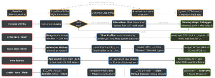

ios-swift · folio
In one line: Measure, don’t guess: baseline on a real device in the Release/Profile config → pick the instrument that answers this symptom → change one thing → re-measure the same scenario. For each tool know its name, how to read its number, and what it cannot see.
Download PDF Print view LaTeX source


The tools, precisely
- Memory Graph Debugger (Xcode debug bar, not Instruments): pauses the app, snapshots every live object and its references. Purple ! = leak/cycle; select an object → who holds it. Snapshot only, no timeline. Enable Malloc Stack Logging (scheme → Diagnostics) to get the allocation backtrace.
- Leaks (Instruments): periodically scans for unreachable blocks — cycles, un-released CF. Blind to abandoned memory (still reachable: unbounded
Dictionarycache, observer array). - Allocations: every heap alloc over time. Persistent vs Transient; Mark Generation (a.k.a. heapshot) — objects created after a mark and still alive show under that generation. Stepwise growth per repetition = abandoned or leaked.
- Footprint ≠ live bytes: Jetsam kills on footprint (dirty pages, decoded bitmaps). 4000×3000 image = 48 MB decoded, any JPEG size.
- Time Profiler samples every thread’s stack (~1 ms): statistical, cheap, no call counts. Read it: Separate by Thread → main thread, Invert Call Tree, Hide System Libraries; chase high self weight (total includes callees). 80 % CPU on a background thread is harmless; 300 ms of sync I/O on main is a hang.
- Hang = main thread not servicing the run loop (Hangs instrument,
MXHangDiagnostic). Hitch = frame presented late. Different metric, different fix. Thread Performance Checker flags priority inversions at runtime; System Trace shows why a thread is not running (lock, page fault). - Hitch time ratio = hitch ms per second of scroll: < 5 ms/s good, 5–10 warning, > 10 critical. Commit hitch = your layout/decode on main; render hitch = offscreen passes (
masksToBounds+radius, shadow w/oshadowPath), blending. - Launch: pre-main = dyld loads/binds dylibs, ObjC setup, static initializers; post-main =
main→didFinishLaunching→ first frame. Measure cold launch; the watchdog (0x8badf00d) kills a stuck launch. CI:measure(metrics: [XCTApplicationLaunchMetric()]). - MetricKit:
MXMetricPayload(launch, hang rate, memory, hitches — aggregated ~daily) +MXDiagnosticPayload(hang/crash/CPU/disk-write stacks). Tells you which problem to bring into Instruments.
Example — signpost + MetricKit
import os; import MetricKit
let sp = OSSignposter(subsystem: "app.feed",
category: .pointsOfInterest)
func loadFeed() async throws -> [Post] {
let s = sp.beginInterval("Feed", id: sp.makeSignpostID())
defer { sp.endInterval("Feed", s) } // ~free unless recording
return try await api.fetchFeed()
}
final class Field: NSObject, MXMetricManagerSubscriber {
func didReceive(_ p: [MXMetricPayload]) {} // aggregates
func didReceive(_ p: [MXDiagnosticPayload]) {} // hang stacks
}
MXMetricManager.shared.add(field) // keep `field` aliveTraps
- “Leaks says 0, so no leak” — memory still climbs = abandoned memory. Allocations generations, then Memory Graph for the holder.
- Memory Graph lives in Xcode, Leaks/Allocations in Instruments — three tools, three questions.
- Profiling Debug or the Simulator: no inlining, Mac CPU — wrong hot spots. Profile scheme, slowest supported device.
NSLogtiming perturbs the run — useos_signpost. - Dealloc test:
XCTAssertNilinsideDispatchQueue.main.asyncasserts nothing — the test already returned. Assert directly or await an expectation. - Zombies: ObjC objects only, never frees. ASan + TSan: not in one run.
- “16 ms per frame” on a ProMotion phone: it is 8.3 ms.
Runtime checkers (scheme → Diagnostics)
| Address Sanitizer | use-after-free, buffer overflow (C, Swift unsafe) |
| Thread Sanitizer | data races — not together with ASan |
| Undefined Behavior Sanitizer | C/ObjC undefined behaviour (overflow, misaligned) |
| Main Thread Checker | UIKit/AppKit off main — on by default in Debug |
| Thread Performance Checker | priority inversions, main-thread I/O |
| Zombie Objects | message to a freed ObjC object |
Remember
Growth: Leaks → Allocations → Graph. Freeze: Hangs → Time Profiler (main, inverted). Jank: Hitches → commit or render. Field: MetricKit. Always: one change, re-measure.